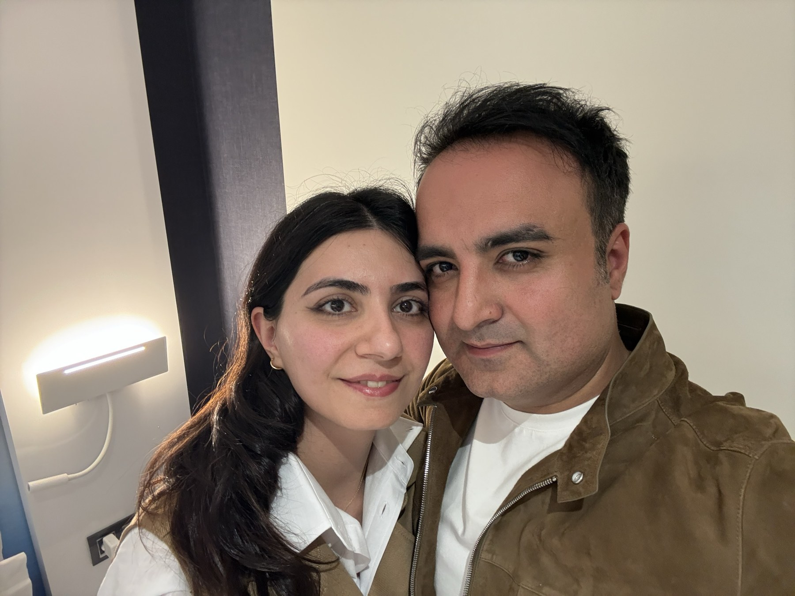

Yalnızca Banu için
Banu &
Serdar.
Dört bölüm, dört an.
Her birini sen açacaksın.

Dört bölüm, dört an.
Her birini sen açacaksın.

O gece gökyüzü bizi bekliyordu. Parmağını parlayan yıldızlara sırayla götür.
Kalbim hiç o kadar hızlı atmamıştı. Hisset.
İlk bavul, ilk pasaport kuyruğu, yan yana iki koltuk.
Kasanın şifresi bir tarih. Çarkları parmağınla çevir.
Bir yıl önce "evet" dediğimiz o günden beri her sabah aynı şeyi düşünüyorum: iyi ki sen. Gülüşün evimin ışığı, yanımda olman en büyük şansım. Nice yıllara, nice yolculuklara, birlikte yaşlanacağımız günlere… Seni çok seviyorum.
İlk yurt dışı gezimiz hangi ülkeyeydi?
Parmağınla kazı
Gerisini bana bırak. 💛
Serdar'a haber verDokun · Sürükle · Hisset